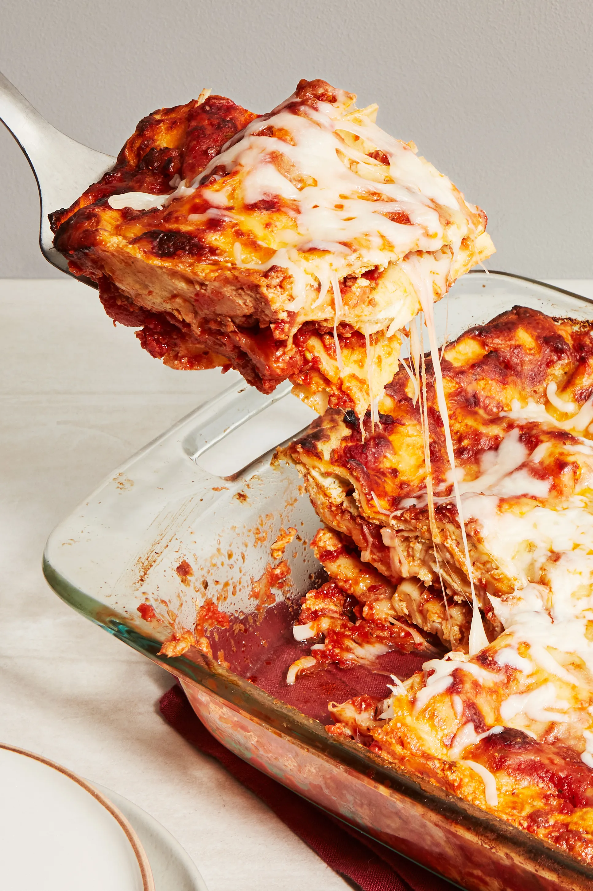

Lasanga

Description
Lasagna, pasta dish of Italian origin, made with broad often ruffled noodles
and a tomato or white sauce.
Ingredients
- Meat
- Onion
- Tomato products
- Sugar
- Spices and seasonings
- Lasagna noodles
- Cheeses
- Egg
Steps
- Make the meat sauce.
- Cook the noodles.
- Make the ricotta mixture.
- Layer the lasagna according to the recipe instructions.
- Cover with foil and bake.
- Let the lasagna rest before serving.